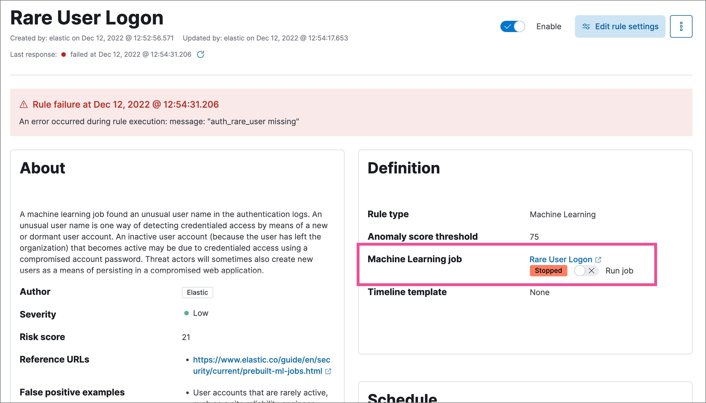
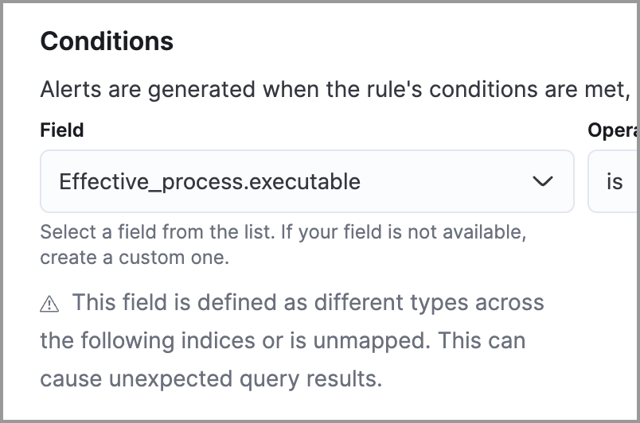
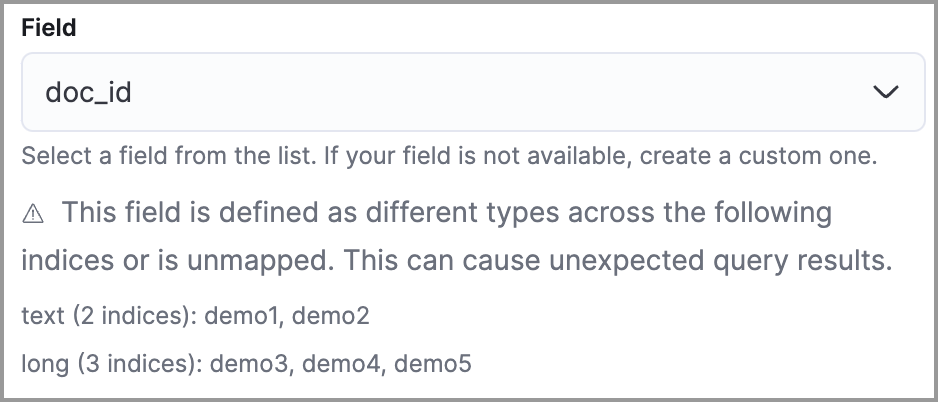
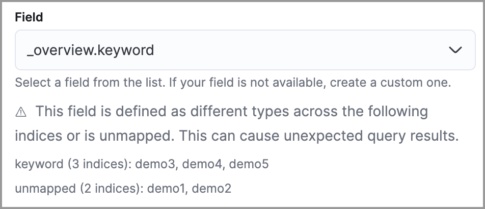

Troubleshoot detection rules
editThis topic covers common troubleshooting issues when creating or managing detection rules.
Machine learning rules
editMachine learning rule is failing and a required machine learning job is stopped
If a machine learning rule is failing, check to make sure the required machine learning jobs are running and start any jobs that have stopped.
-
Go to Rules → Detection rules (SIEM), then select the machine learning rule. The required machine learning jobs and their statuses are listed in the Definition section.
 - If a required machine learning job isn’t running, turn on the Run job toggle next to it.
- Rerun the machine learning detection rule.
Indicator match rules
editRules are failing due to number of alerts
If you receive the following rule failure: "Bulk Indexing of signals failed: [parent] Data too large", this indicates that the alerts payload was too large to process.
This can be caused by bad indicator data, a misconfigured rule, or too many event matches. Review your indicator data or rule query. If nothing obvious is misconfigured, try executing the rule against a subset of the original data and continue diagnosis.
Indicator match rules are timing out
If you receive the following rule failure: "An error occurred during rule execution: message: "Request Timeout after 90000ms", this indicates that the query phase is timing out. Try refining the time frame or dividing the data defined in the query into multiple rules.
Indicator match rules are failing because the maxClauseCount limit is too low
If you receive the following rule failure: Bulk Indexing of signals failed: index: ".index-name" reason: "maxClauseCount is set to 1024" type: "too_many_clauses", this indicates that the limit for the total number of clauses that a query tree can have is too low. To update your maximum clause count, increase the size of your Elasticsearch JVM heap memory. 1 GB of Elasticsearch JVM heap size or more is sufficient.
General slowness
If you notice rule delays, review the suggestions above to troubleshoot, and also consider limiting the number of rules that run simultaneously, as this can cause noticeable performance implications.
Rule exceptions
editNo autocomplete suggestions
When you’re creating detection rule exceptions, autocomplete might not provide suggestions in the Value field if the values don’t exist in the current page’s time range.
You can resolve this by expanding the time range, or by configuring the autocomplete feature to get suggestions from your full data set instead (turn off the autocomplete:useTimeRange advanced setting).
Turning off autocomplete:useTimeRange could cause performance issues if the data set is especially large.
Warning about type conflicts and unmapped fields
A warning icon ( ) and message appear for fields with type conflicts across multiple indices or fields that are unmapped. You can learn more about the conflict by clicking the warning message.
) and message appear for fields with type conflicts across multiple indices or fields that are unmapped. You can learn more about the conflict by clicking the warning message.
A field can have type conflicts and be unmapped in specified indices.

Fields with conflicting types
editType conflicts occur when a field is mapped to different types across multiple indices. To resolve this issue, you can create new indices with matching field type mappings and reindex your data. Otherwise, use the information about a field’s type mappings to ensure you’re entering compatible field values when defining exception conditions.
In the following example, the selected field has been defined as different types across five indices.

Unmapped fields
editUnmapped fields are undefined within an index’s mapping definition. Using unmapped fields to define an exception can prevent it from working as expected, and lead to false positives or unexpected alerts. To fix unmapped fields, add them to your indices' mapping definitions.
In the following example, the selected field is unmapped across two indices.
